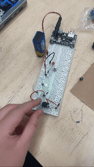
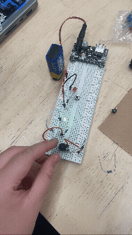

1. Re: ADRUINO
This week was the first of three that we spent at the Telstra Maker Space to learn about Adruino and Physical Computing. We were given a toolkit to share between two of us at a time which looked something like this.
We attempted to identify the parts and what they potentially do, and failed miserably. Nonetheless, it was interesting to learn about the different components and what they're capable of once we were given the answers.
2. Exercise 1: LED CIRCUIT
For our first exercise, we built a simple circuit that would power a LED light. We relied on the tutors' verbal instructions and the diagram provided to us to put everything together. A battery was used to provide the energy for this exercise which I thought was kind of cool.
At first, we had some trouble mapping the circuit onto the breadboard as we weren't familiar with the materials and how they're presented on the diagram. However, once we got the hang of it everything was quite straight forward.


As we had some time left, we tried to expand the circuit so that it would power two LED lights instead of just one. The challenge was to connect another LED light and button to the existing circuit while still keeping the electricity flow. We needed some help on the way but ultimately was able to get it done.

3. Exercise 2: LED DIAL
Our second exercise was similar to the first one but instead this time we're controlling the LED light using a potentiometer as a dial controller. The main difference is that the potentiometer has 3 terminals, which call for a slightly different wiring route.
Setting up the circuit was definitely easier the second time around. We understood the diagram a lot better and I personally was finally kind of wrapping my head around the concept of positive and negative terminals.
 

Overall, I think that for a similar amount of effort the potentiometer seems to be a much more interesting way of controlling LED lights because of its mechanic. I can see it being used on a larger scale to facilitate something cool like an audiovisual projector.